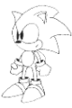

|
QUICKNAV BAR
Off-Topic WGDs
This isn’t necessarily about STJr, but more on gaming in general. Think of it more as an ‘editorial’ section.
24th April 2000
The Stuff People Come Out With
1st June 2000
The Dark Side of Online Gaming
15th June 2000
"Chu Chu Rocket" Thoughts
28th June 2000
Dealing with RPGs
14th July 2000
Piracy
28th September 2000
Why SAGE was/will be so great
4th October 2000
Sega vs. Sony vs. Nintendo vs. Microsoft
Why SAGE was/will be so great
22nd November 2000
Games, Europe, Down Under and Imports
7th February 2001
The Sega Crisis
|
|

|

|
|
The White Glove Diaries |
Welcome to the White Glove Diaries! This section contains documents detailing various
stages of the construction of our games. More recently, it has also been expanded
to become an editorial section.
Sonic Robo Blast 2
Sonic Robo Blast II draws ever closer to being released, with only a matter of months to go before it will be released, as we get closer, we'll be featuring more and more screenshots and movies exclusive to the White Glove Diaries!
We have created two different versions of the White Glove Diaries - The text versions, and the RealAudio versions. If you prefer to just read your way through the .htm, choose the text option, however, if it's late and your eyes are blurry, and you'd rather listen to someone else doing the talking, go for the RealAudio version - RealPlayer G2 (or higher) required, which can be downloaded from http://www.real.com/!
Part I
5th September 1999 - OpenGL Process
.TXT version
6th September 1999 - Netplay
.TXT version
13th September 1999 - Add-ons
.TXT version | RealAudio version
15th September 1999 - SRB1 vs. SRB2
.TXT version | RealAudio version
18th September 1999 - Sonic the Director
.TXT version | RealAudio version
27th September 1999 - SRB2 Dreamcast
.TXT version
1st October 1999 - History of SRB2
.TXT version | RealAudio version
4th October 1999 - Commerical Break!
.TXT version | RealAudio version
7th October 1999 - Will SRB2 be hard?.. And, Sonikku's birthday!
.TXT version | RealAudio version
Part II
14th October 1999 - Unto Part II
.TXT version | RealAudio version
15th October 1999 - Secrets
.TXT version | RealAudio version
27th October 1999 - Make Your Own Characters
.TXT version
1st November 1999 - Level Designing
.TXT version
23rd November 1999 - Some words on the SRB2: HT Time Attack Competition
.TXT version | RealAudio version
24th November 1999 - WADever - A brief description of the WAD structure
.TXT version
26th November 1999 - Programming: Beyond The Basics
.TXT version | RealAudio version
10th December 1999 - Some final words on the closing of the SRB2: HT Time Attack Competition
.TXT version
15th December 1999 - TUTORIAL: Making an SRB2 Level, Part One
.TXT version
16th December 1999 - TUTORIAL: Making an SRB2 Level, Part Two
.TXT version
Part III
18th December 1999 - Development Diary, Part One
.TXT version
28th December 1999 - Development Diary, Part Two
.TXT version
1st January 2000 - Development Diary, Part Three
.TXT version
8th January 2000 - Development Diary, Part Four
.TXT version
15th January 2000 - Development Diary, Part Five
.TXT version
22nd January 2000 - Development Diary, Part Six
.TXT version
29th January 2000 - Development Diary, Part Seven
.TXT version
5th February 2000 - Development Diary, Part Eight
.TXT version
6th February 2000 - The "Freeze" and the Stats
.TXT version
Part IV
4th March 2000 - Change of Plan
.TXT version
5th March 2000 - SRB2: XMAS v0.92 - Comments on Comments
.TXT version
11th March 2000 - A New Hope
.TXT version
12th March 2000 - Online Sonic fan-games: A reality?
.TXT version
25th March 2000 - You got the new high score!
.TXT version
26th March 2000 - SRB2: XMAS v0.93 - The Public Reaction
.TXT version
25th April 2000 - SRB2: XMAS v0.94 - It's Not All Our Fault
.TXT version
26th April 2000 - The Contest
.TXT version
31st May 2000 - More on Multiplayer
.TXT version
2nd June 2000 - SRB2: XMAS CD
.TXT version
4th June 2000 - The Direction of SRB2
.TXT version
16th June 2000 - Bringing a close to Part IV
.TXT version
Part V
29th June 2000 - What makes SRB2: An overview
.TXT version
15th July 2000 - What makes SRB2: Level Design
.TXT version
29th September 2000 - What makes SRB2: The Engine
.TXT version
2nd October 2000 - What makes SRB2: The Sprites
.TXT version
16th October 2000 - What makes SRB2: The Music
.TXT version
23rd October 2000 - What makes SRB2: Replay Value
.TXT version
24th October 2000 - SRB2 Demo 1 - Reactions
.TXT version
20th December 2000 - ...The end?
.TXT version
|